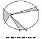

Fig. 791.01
|
791.01
 With the advent of mathematical calculating capability
into the public domain
only 500 years ago, we had the beginnings of mathematically
derived knowledge of cosmic
structuring principles. To understand the significance
of these principles we begin with
Isaac Newton. Newton was inspired by the prior discoveries
of Kepler, Galileo, and
Copernicus, and he derived his laws of motion from consideration
of their basic concepts,
as follows:
With the advent of mathematical calculating capability
into the public domain
only 500 years ago, we had the beginnings of mathematically
derived knowledge of cosmic
structuring principles. To understand the significance
of these principles we begin with
Isaac Newton. Newton was inspired by the prior discoveries
of Kepler, Galileo, and
Copernicus, and he derived his laws of motion from consideration
of their basic concepts,
as follows:
- Kepler discovered that all of the Sun's then known
six planets orbit the Sun in
elliptical paths.
- The planets are of different sizes, each going around
the Sun at different rates
and at vastly different distances from the Sun.
- In a given amount of time all of the planets "sweep
out" equal areas. For
instance, in a period of 21 days each planet describes
a relatively short elliptical
arc of travel around the Sun. If we connect the two
ends of those arcs by the
shortest radial lines to the Sun, and if we make proportionally
accurate
diagrams of each of the six pie-shaped pieces of sky
enclosed by the respective
arc-and-radii-bound areas, and if we use Kepler's carefully
measured
dimensions of those arcs and radii, we will find that
the several triangular
pieces of pie are very different in shape__ranging from
very thin and long to
very short and wide-but when calculated for area, they
are all found to be of
exactly identical areas. (Compare Sec.
646.11.)
- The coordination of these planetary motions was
found to be exquisitely
accurate but hidden invisibly in disparate observational
data. Considered
separately, each planet had unique behavioral characteristics
that could not be
explained by any mechanics of physical contact such
as that of a train of teeth-
meshed gears. The planets and the Sun are vast distances
apart. Kepler must
have noted that a weight on the end of a string hand-swung
by a human around
the head will__when released into orbit__travel tangentially
and horizontally
away from the human, while being progressively diverted
toward Earth by the
gravitational pull. Thus Kepler concluded that invisible
tensile forces were
intercohering the orbiting planets with the Sun and,
to a lesser extent, with
each other.
- Galileo's measurement of the accelerating acceleration
in the rate of bodies
falling freely toward Earth indicated that each time
the distance between the
falling body and the Earth was halved, the speed of
falling increased fourfold.
- Newton was also impressed by the enormous magnitude
of the tidal pulling of
the Earth's waters by the Moon and the Sun.
- The astronomers and navigators had established information
governing the
seemingly "fixed" interpositions of certain celestial
star patterns at any given
moment of the year as viewed from any given position
on Earth. Of course,
much of the celestial sphere patterning is obscured
from any human observer
on Earth's surface by the vast bulk of our planet. But
Newton knew from
personal experience that the position (as calculated
by spherical geometry) of
any one of the viewable stars as measured in angular
height above the
observer's horizon in any given compass direction at
any chronometer-
recorded moment of time on any given annual calendar
day will permit the
observer to make accurate calculation of his position
on Earth.
|